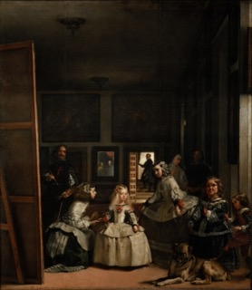
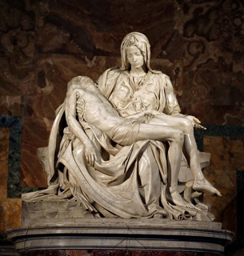
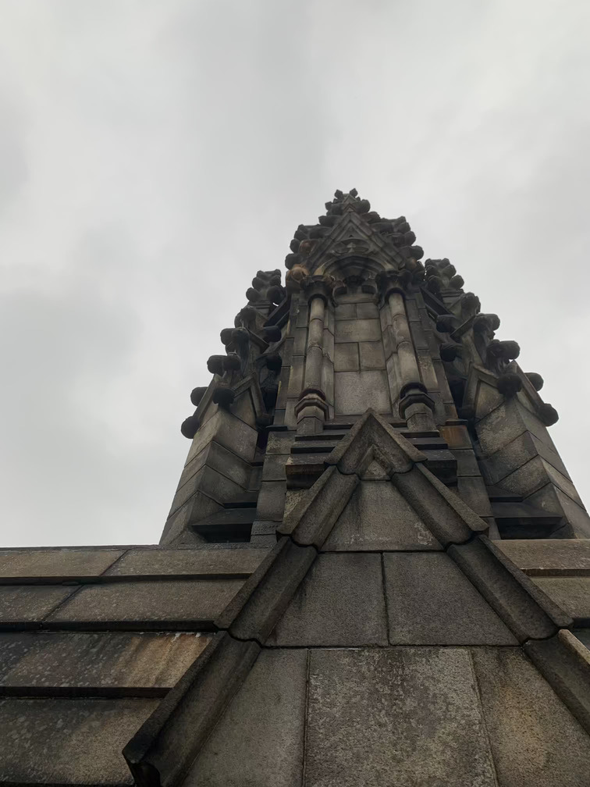
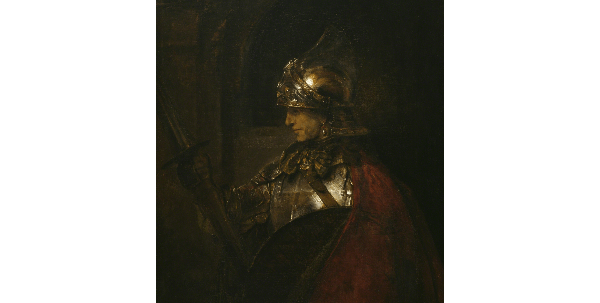

If you can only read some of them without falling asleep or navigating to YouTube, please pick from these. They are
my favoriates.
Las Meninas A blow in the face for me. To learn that you can approach a piece of artwork
this way. Pericles Read the Funeral
Oration of Pericles. If you don't cry over this, come to me, I'll make you cry. (Just kidding) Life of Raphael Do enlarge The School of Athens.
Feel it. The Moses of Michelangelo About concealing one's emotions. About strength and the essence of
power. IMO, this work depicts the essence of power better than any other freaking metaphors, e.g. highways...what
the heck?
blasphemy, inside & outside, window, position & power (power given by position, not god)
Iktinos & Kallikrates overseen by Pheidias
Parthenon
447-432 BC
culture & war/barbarism (has the war ever ended?), inside & outside (intellect vs strength)
Bruegel
The Battle between Carnival and Lent
1559
indulgence, false equivalence, sin of treating unequals as equals (Marx), perspective vs narrative,
momentary collapse of classes
Bruegel
Netherlandish Proverbs
1559
118 proverbs in the painting, chaos, so structured that it is lawless
Bruegel
Fall of Icarus
1568
landscape, no single historical narraive, fly too high and you fall
Bruegel
Peasant Dance
1568
not in natural position (stage), commodified, indulgence, class of these people
Jan van Eyck
Arnolfini Portrait
1434
perspective, upper class trying to keep it together (eye gaze, posture), northern Renaissance
Clara Peeters
Still Life with Cheeses, Almonds and Pretzels
1615
time and erosion, the upper class, captitalism in play (porcelain plate), find oneself (especially women)
through consumption instead of religion (her reflection in the pitcher)
Clara Peeters
Still Life with ...
1611
upper class, capitalism, consumption
Rembrandt
The Artist in His Studio
1629
a private space (inside) commodified by Amsterdam (outside), commercializing privacy
Rembrandt
Self Portrait with Cane
1658
psychology (pride and pain), costume of a king, layers of paints: exterior building up the interior
Rembrandt
Portrait of Jan Six
1654
psychology, costume, anti-Raphael, dissolving into the background
Rembrandt
Self Portrait (Tronie)
1630
speed reveals the unconcious, you don't look like yourself in the painting
Rembrandt
Self Portrait
1640
boundary between the figure and the background
Rembrandt
The Syndics of the Draper’s Guild
1662
psychology
Rembrandt
Self Portrait
1629
anti-Raphael (brushstrokes), sculptural aspect of painting, lighting (can't see his eyes)
Rembrandt
The Night Watch
1642
anti-Raphael, sculptural painting, psychology
Rembrandt
The Anatomy of Dr. Tulp
1632
psychology, lighting
Jacques-Louis David
The Oath of the Horatti
1785
modern, structure, institutions mediating history, history painting, self-reflective (read from left to
right)
Jacques-Louis David
Académie d’homme, dite Patroclus
1780
male body as the agent of history, male gaze turning away, power dynamics (disicple-master relationship)
Angelica Kauffman
Design
1780
allegory of institutional sexism, reproduce culture in academics and make fun of these people
Angelica Kauffman
Zeuxis Chooosing His Models for His Paintings of Helen of Troy
1780
blind spot (the woman on the RHS), hidden signature, institutional discrimination
Goya
Family of Carols IV
1800
placeholders (the woman looking away), everyone is replacable
Goya
Meadow of San Isidro
1788
the line separating the rich and the poor, disgust is very much about class, disgust as regulation
Goya
Second of May, 1808
1814
history painting with the center being a horse
Goya
Third of May, 1808
1815
Goya's attempt against pressure from the government
Goya
This is Worse
...
the male body fragmented in war. male body as an agent of history
Goya
The Sleep of Reason Produces Monsters
1799
medium of painting, "the dream of reason produces monsters" (rational things make you do irrational things)
Renoir
Monet Painting in His Gardens at Argenteuil
1873
painting outdoors, technologies granted mobility, staged, early photography
mass control, city as a theater, everyone is on display (present their classes, demonstrate capitalism),
artifical paradise
Monet
Women in a Garden
1867
...
Constantin Guys
Carriages and Promenaders on the Avenue des Champs-Élysées
18xx
costume, love at last sight
Manet
A Bar at the Folies-Bergère
1882
the mirror: guilty male gaze, flattened
Manet
Le Déjeuner sur l'herbe
1862
naked women as the property of the two men, Salon des Refuses (rejection as honor)
Manet
Olympia
1863
econ collapsing, hierarchy destroyed, outlining of the body, male desire humiliated, colonization
Manet
La négresse
1863
...
Mary Casset
At the Opera
1878
subject of male gaze
Berthe Morisot
The Cradle
1874
first impressionist exhibition
Berthe Morisot
Mother and Sister of the Artist
1870
...
Picasso
Demoiselles d'Avignon
1907
anti-narrative, anti-perspective, acknowleging the viewer
Picasso
Daniel Henry-Kahnweiler
1910
analytic cubism: dissolve
Picasso
The Violin
1912
synthetic cubism: collage, newspapers pulled apart for atmosphere, 2D creating 3D
Picasso
Guitar
1912
instrument: sight and sound
...
Kru mask
1910
African culture influence European art
Picasso
Guernica
1937
violence of war, animal vs human, the unconcious vs the concious, rationality vs irrationality, political
function of art
Beardan
The Dove
1964
anti-documentary, red bricks for NY and Harlem, culture of Jazz, middle class for consumption, fragmentation
Beardan
The Prevalence of Ritual: Baptism
1964
African culture, Beardan as a massive reader, collage, anti-documentary
Beardan
Patchwork Quilt
1970
modernism deconstruct itself at the same time, quilt being an object of desire
Duchamp
Fountain
1917
NY and the impression of welcoming everyone (confronted), anti-artist, pro-technology, celebration of
reproduction, artist as a camera
Pollock
Autumn Rhythm
1950
optical effect, action painting: painting as an index of an event
Pollock
Number 31
1950
optical effect, action painting: painting as an index of an event
John Cage
4'33
1952
against traditional repetitive structure, cannot reproduce, incorporating sound from the audience, destroy
distinction between the performer and the stage, noise and silence as cultural boundaries
Rauschenberg
Rebus
1955
media entering canvas, deconstructing painting
Rauschenberg
Factum I and II
1957
reproduction, canvas as a movie screen
Frank Lloyd Wright
Darwin and Isabelle Martin House
1903
American identity (upper middle class, no wall), organic philosophy, houses or watch towers? inability to
find the entrance, family holding everything together
Corbusier
Villa Savoge
1929
car being part of the building, tech, applying form to architectural space, seamless movement at the
entrance
Corbusier
Unite d'Habitation
1952
urban planning, you don't need to go outside
Warhol
Large Campbell's Soup Can
1964
...
Warhol
Marilyn Diptych
1962
the more you reproduce, the more it's gone. aura as celebrity, commodification, cinema vs theater
Warhol
Ethyl Scull 36 Times
1963
WANTS to be commodified as it identifies her class, criticism vs exploitation, she is soup can
Warhol
32 Campbell's Soup Cans
1962
dada, distinguish each can from flavor instead of brushstrokes, imposing supermarket in gallery: fine art is
supermarket
Warhol
Thirteen Most Wanted Men
1964
white males, criminals
Warhol
Jackie
1964
deepest emotions televised (grief questioned for performance), media makes us consumers of death
Basquiat
Grillo
1984
playing with texture and vision, graffiti, lineage of institutional discrimination, racism
Basquiat
Maid from Olympia
1982
art historian, adding to the lineage of Manet, bring the black figure to the foreground
Basquiat
Horn Player
1983
Charlie Parker, copy right sign (commcialization of himself, street artist as outsiders)
Cindy Sherman
Untitled Film Still #54
1980
photograph implying cinema, in-between movement, pictures generate relations, NYC as a stage
Other artworks you should know
The painter of modern life beauty lies in how the temporal creates the eternal. The work of art in the age of its reproductivity mechanical reproduction is utopian. tech reveals social
organizations. to see is to reproduce. photos reconfirm that you are a part of the institution.
inside & outside, social hierarchy (pyramid structure), scale of the painting (massive, is immersive art
panopticon?)
Velazquez
Las Meninas
1656
blasphemy, inside & outside, window, position & power (power given by position, not god)
Iktinos & Kallikrates overseen by Pheidias
Parthenon
447-432 BC
culture & war/barbarism (has the war ever ended?), inside & outside (intellect vs strength)
Mnesikles
Propylaia (gateway)
447-432 BC
See Parthenon from inside & outside (straight to power and you get killed), sequencing (stairs, is sequenced
power also power?)
N/A
Acropolis (citadel)
447-432 BC
optimal refinements (curved to make it looks higher), manipulation (look up), panopticon (high above, looks
below)
N/A
Metopes (wall)
447-432 BC
demonstrate victory and heroic acts, gods need people
N/A
Continuous Ionic Frieze
442-438 BC
manipulation (look up, walk around), panopticon (compare yourself to them)
N/A
New York Kouros
590-580 BC
archaic, essence over reality
N/A
Kritios Boy
480 BC
classical, contrapposto (naturalizing)
N/A
Doryphoros
450-440 BC
classical, contrapposto (naturalizing)
N/A
Drunk Old Woman
200-180 BC
hellenistic, degraded reality
Robert de Luzarches
Amiens
1220-1269
form mediates history (cross for christianity), nave & tripartite elevation (dwarf human beings),
quadripartitite vaults (mimick forest, moralize trades, blue dye & water-based economy), last judgement (gate,
Jesus as power), virtues and vices (men kissing: economic?, censorship)
Raphael
Disputa
1509
three-level: pope's arthority comes from above. Jesus: more human compared with Gothic
Raphael
School of Athens
1509-1510
power in questioning (the setup of the painting is wrong), intellectual movements converge to present
Raphael
Marriage of the Virgin
1504
window (everything converges there), Raphael and Perugino (the second who perfected the first)
Raphael
Deposition
1507
Raphael's grace, naturalization
Michelangelo
David
1501-1504
the moment of non-being, focus on human body, contrapposto, the subtractive method, larger hands (hands of
sculptors)
Michelangelo
The Last Judgement
1534-1541
muscles (all about himself, idealization), the most difficult colors with the most difficult postures
(showing off)
Michelangelo
Pieta
1498-1500
female figure used as a background for his ideal male
Sofonisba
Portrait of Family
1559
vergo
Sofonisba
The Chess Game
1555
inside & outside (interruption of the game), civilization (game instead of fight), to be a woman is to play
a game
Sofonisba
Massimiliano Stampa
1557
social class falling apart on the boy
Sofonisba
Self-portrait
1556
gazing back at the male gaze, portraited at work instead of dignified
Bernini
David
1623
infinity in the blind spot (Golliah is behind David)
Bernini
Apollo and Daphne
1622-1625
mixing senses (hands and bark, lighting), fragility as part of reality
Bernini
The Ecstasy of St. Theresa
1647-1652
body consumed in folds (desire), allegorical (synthesized with eyes), censorship
Roldán
St. Michael and the Devil
1692
in Spain colorized, in Italy no
Important Terms
Post-linteo the very dignity of and rights of people are encoded in to the form of a shelter. Megaron for greek palaces. almost like a blueprint. rectangular hall with a two-columned entrance Column Orders Doric (flat, military strength and power), Ionic (curly, philosophy and intellectual
activities), Corinthian (looks like bushes...success and power) Contrapposto Standing with most weight on one foot. A naturalizing posture. Statue Archaic (abstract idealism: essence over reality), Classical (contrapposto, idealized naturalism:
perfected reality), Hellenistic (realism: degraded reality) Fresco mix colors with water and paint on the wall, the painting becomes a part of the wall. outlining
done with dots.
Important Art Periods
Romanesque: heavy walls, rounded arches circular layout signals sacred spaces Gothic: flying buttresses, pointed arches, vault ribs originated in France, around 12th century, but much
of what we refers to as Gothic is done in 19th century.
technology is what makes Gothic different from Romanesque. Renaissance: a period when science and aesthetics of antiquity, classical aesthetics, are being put to the
service of the church. discipline (idealization) Baroque: an excess of details (folds in clothes), desire, diagonal, the moment of intensity, allegorical (use
your eyes to synthesize), additive method control (freedom)
Important Ideas
Inside & Outside
human and nature (Gericault), human and animal (Lascaux), inside history vs outside history (parthenon),
measure human to god (parthenon), intersection of money and art (moralization, Amiens),
things you can see vs the invisible (Amiens vs relics), technology vs experiences (Amiens)
institutions and people (unconciously defined by institutions, Michelangelo) Real? What is more real? Can something be so fake that it seems real? objectivity/emotion,
forgeries (can you have an original without a copy?), reconstruction (is preservation also destruction?) Culture and barbarism There isn't a document of culture that isn't a document of barbarism. Is culture
another form of war? Excess Nothing exists as an excess. Excess is a manifestation of power. Technology What shows up to disappear. Engineering is used to make itself opaque. Manipulation What kind of manipulation is more dangerous? Gothic vs Raphael's? Censorship censorship produces what it sensors (men kissing in Amiens) Humanism which one is uglier? Humanism or antihumanism (humanism is not significant)? Power control by giving the illusion of freedom vs discipline by giving an idealized figure
Other artworks you should know
Liberty leading the people (Delacroix, 1830, gender, pyramid structure)
Lascaux (France, prehistoric, humanity and dignity)
Oath of the Horati (Jack Louis David, 1784, modernism, linear structure)
Fresco at the Sistine Chapel (Pietro Penegino, 1481-1482, perspective, Christianity)
Panzani's adverstisement (stereotype, image as text)
The Treachery of Images (Rene Magnette, 1929, pipe vs image representing pipe)
Suicide (Louis Aragon, 1924, text as image)
Trojan's Column (113, excess: the power of building a tower so high that ppl cannot see)
Notice the painter on the left hand side who is shaded by the canvas.
The painter is looking out at us, the viewers of this painting, as well as the spectators inside the painting.
"reciprocal visibility" between the painter and the viewers, us "the image should stand out from the frame" by Pachero
The dual purposes of the canvas on the left:
1) adds movement to this still painting: the painter could be visible/invisible depending on if he's painting or
not
2) prevents the gazes from the audience (us) being definitely established
A virtual triangle that defines a picture of this picture:
at the top: the painter's eyes
one base angle: the invisible place occupied by the model
another base angle: the figure sketched out on the canvas
The light from the right envelops the figures and directs towards the place where the painter's brush points to.
All canvas hanging on the wall are blurred except for one: that one in the center is not a painting, but a mirror.
In Dutch paintings it was traditional for mirrors to play a duplicating role, but here the mirror is saying
something not covered in the painting itself, that the King and his wife are here to watch.
Also the positioning of the mirror is subtle: its upper edge runs halfway between the top and the bottom of the
canvas. The punchline of this painting is the mirror, with its three functions:
1) it is the reverse of the hidden canvas on the left. hidden vs revealing
2) it leaps out of the painting itself by showing you who's watching
3) it stands adjacent to the doorway, where a man is gazing outside of the scene as well
About Infanta Margarita: the princess in the middle, the center image
A vertical line dividing the canvas into two halves passes right through her eyes, and her face is a third of the
total height.
By rules of composition, the princess is the center of the painting, and to stress that, Velázquez adds a person
kneeling below, looking towards the central one, and a person to the right looking at her as well.
What this painting is about:
Velázquez himself is painting for the couple in his studio, a bunch of people are watching him paint, and some
people are watching those who are watching :)

Las Meninas, Diego Velázquez, 1656, Spain, Oil on canvas
Analysis of the Panzani advertisement
1. linguistic messages from the text:
1) denotational: the company name itself
2) connotational: implication of the "italianicity" of the company
2. pure image:
1) a half-open bag which lets the provisions spill out over the table, "unpacked" -> freshness
2) tomatoes, pepper and the tricolored hues -> italianicity
3) the composition that symbolizes "nature morte" ("still life") -> aesthetics
3. objects in the scene:
we see the pasta, tomatoes and stuff, and with our perceptions we know it's an ad for pasta
How do we analyze an image in general?
1. the linguistic message
titles, captions, accompanying press articles, film dialogues, comic strip balloons, etc.
two functions of the linguistic messages:
- anchorage (more common): directs the reader through the signifieds of the image, helps the spectator to choose
the correct level of perception -> to be sure what it is talking about
- relay (less common): stands in a complementary relationship with the image
2. the denoted image
How does a denoted image convey information?
- rule-governed transpositions to reproduce the target object or scene
- division between the significant and insignificant
- apprenticeship: denoted message -> connoted message
3. rhetoric of the image
correspond signifiers (or, connotators) of connotation which are specified according to the chosen substance, and
the set of connotators form a rhetoric, which appears as the signifiying aspect of ideology.
it is important to understand that in the total images these connotators constitute discontinuous or better still
scattered traits, i.e. some part of the image cannot be transformed into connotators
Some Terminologies
Denotation and Connotation
- Denotation: literally what it means, e.g. a rose is a flower
- Connotation: its hidden meaning, e.g. a rose represents love
Signifier and signifieds
- Signified: a sign's physical form, e.g. a real tree standing right in front of you
- Signifier: the meaning or idea conveyed by a sign, e.g. you think of the image of a tree when you see the word
"tree"
A passage that I don't really agree with
In the photograph - at least at the level of the literal message - the relationship of signifieds to signifiers
is not one of 'transformation' but of 'recording',
and the absence of a code clearly reinforces the myth of photographic 'naturalness':
the scene is there captured mechanically, not humanly (the mechanical is here a guarantee of objectivity).
Man's interventions in the photograph (framing, distance, lighting, focus, speed) all effectively belong to the
plane of connotation.
I understand what the author is trying to say, that picutres captured by machines are simply not 'creative', and
do not 'transform'. But I don't think that's the case.
In my opinion it's just extremely hard for a photographer to encode the message because what he captures comes
from real life, and he can't change that, but still I think it's possible to achive this.
Parthenon
- temple of Athene, or Athena Parthenos (Athena the Virgin)
- on the highest part of the Acropolis
- architects: Callicrates and Ictinus. statue designer: Pheidias
- material: fine marble
- built to celebrate victory in the Persian war, served as a ‘treasury’, later converted into a church dedicated
to the Virgin, then a mosque
- remained mostly intact until 1687, reconstructions carried out
Funeral Oration of Pericles
Thucydides: a Greek writer of the period during which the Parthenon was constructed. He wrote books on the
Peloponnesian War, in which the funeral oration given be Pericles was recorded.
Pericles: one of the most prominent leaders of the Athenian democracy.
The Peloponnesian War: a war between Athens and Sparta (431-404 BCE), which were two of the most powerful
autonomous city-states in Greek at that time. Athens was eventually defeated.
Pericles was active at the beginning of the war, but he died of a plague that overruled Athens soon after. The
plague was considered a significant cause of its final defeat.
Parthenon was built one year prior to the breakout of the war. It symbolizes Athenian civic principles and pride.
It is a political monument as well as a religious center.
Read the full oration here.
It's very beautiful, well-written and touching, in my humble opinion. I nearly cried over this...
Life of Pericles
Born a noble, with almost perfect physical features except that he had a super long head, which is why his
portraits are all showing him wearing a helmet.
He learns music, philosophy, and so on. He was particularly close to Anaxagoris of Clazonmenae, great man and
admired by Pericles.
As a young man Pericles was inclined to shrink from facing the people.
But finally he decided to attach himself to the people's party and to take up the cause of the poor and the many
instead of that of the rich and the few, which was opposed to his own temperament.
Still, he reserved himself, and only spoke for great occasions. Whenever he spoke, it was thunder and lightening.
He was really good at persuasion.
His administration was "democracy in name, but in practice government by the first citizen". He was the first who
led on the people into passing allotment, granting of allowances, fees for public services, etc.
The aristocratic party put forward Thucydides to prevent Pericles from being too powerful.
As a response, Pericles chose to hand over the reins of power to the people to a greater extent and deliberately
shaped his policy to please them.
But his attitudes changed over time as well. In general, he ruled the Athenians by using their hopes and fears as
if they were rudders. Pericles made Athens the greatest and richest of all cities.
Resentment against Pericles piled up when the plague outbursted. He also died of this plague.
Pericles and His Construction of Public Buildings
Mixed opinions:
- Supporters and himself: 1) Athenians were not obliged to give the allies any account of how their money was
spent, provided that they carried on the war for them and kept the Persians away.
2) Some people can benefit from his campaigns by joining the armies, but those who can't should also have some
ways of earning, thus constructions.
- Opposers: People's contributions were used to beautify the city instead of in wars against the Persians. So
Pericles said he would pay for these constructions.
These buildings were completed very fast. The director and supervisor of the whole enterprise was mostly Pheidias,
Pericles's entrusted friend, but Parthenon was completed by Callicrates and Ictinus.
More on Pheidias: he built the statue of Athene that stands erect in the Parthenon of Athens.
Really like these words. Well said. Pericles deserves our admiration, then, not only for the sense of justice and the serene
temper that he preserved amid the many crises and intense personal hatreds which surrounded him, but
also for his greatness of spirit. He considered it the highest of all his claims to honour that, despite the
immense power he wielded, he had never given way to feelings of envy or hatred and had treated no
man as so irreconcilable an enemy that he could never become his friend.
A Sculpture in Parthenon: Athena Parthenos by Pheidias
What is Gothic?
buildings and objects whose forms are based upon the pointed arch produced from mid 12th century and late 15th
century in Europe.
the term was originally used by the renaissance humanists to describe the "barbaric" architecture before the
rebirth
"the Gothic age": age of faith (Hugo), golden age before industrialization (Ruskin)
13th century marks the a cultural highpoint, and everything is downhill from then on (because of plague, etc).
This is also the period when the church is very weak
Different Methods to study Gothic Art
1. see the cathedrals as products of technology and functional engineering
2. focus on the symbols that make up their meanings; iconography
3. through the eyes of the medievals
Amiens
built for the performance of the yearly cycle of the liturgy
three noticable masons: Robert de Luzarches, Thomas and Renaud de Cormont
what were there in Medieval?
- painted glass -> Gone
- columns draped with tapestries -> Gone
- statues, altarpieces, reliquaries in the chapels and altars -> Gone, gone, gone
Traditional Tripartite Society -> Complex Social Structure
- those who prayed: clergy
- those who fought: nobility
- those who ploughed: peasants
- complexity: merchants, craftspeople, etc
Vision
1. Modes of vision
- Corporeal level
---- visible things
---- outward appearance and mystical significance
- Spiritual level
---- truth of hidden things
---- pure and naked seeing of divine reality Is it just me that is too dumb? Honestly I don't have the slightest idea what these things are talking
about...
2. How Did Gothic Art Presented Itself Through Vision?
- Extromission: that the eyes are a lamp to make art visible.
- Intromission: the image sends light instead of the eyes.
This article is about the reconstructions of the Amiens
Cathedral because the Gothic masons "felt rather than measured" during their time of construction. lol.
Amiens Cathedral was built during 1220 - 1269, which was rather fast, without much modification.
The article goes in great details, making it hard to summarize, so I'll just leave it as it is.
Background
During the Middle Ages kisses were most often seen as sexual intercourse.
During the 12th century, confession was instigated as necessary for all Christians.
Sensual pleasures were referred to as whorish embraces.
To embrace a woman was to embrace the devil.
Types of Kiss
1. The lecherous kiss
Compared to the genital-exposing Romanesque personification of lust, the Gothic images seems charming and
exceedingly chaste.
analogy between the woman's flesh and carrion
The woman in the Amiens relief signals sex and death by the vertical alignment of lips coming together directly
above the genitals with their hidden, uncontrolled moistenings and movements.
Matrimonial kisses represented legitimacy of the embrace
kissing Christ's incarnate flesh symbolizes bliss to heaven.
In the most orthodox view, the love of the Bridegroom for the Bride represented Christ's love for the church, or
the individual soul's love of God.
The kiss can also been seen as a gift, which suggests social power. It is commonly created by and for men.
2. The legal kiss
Can be understood as a pledge of faith, a record written with the lips just like an oath spoken with them.
Women are exempted from this rite, with the exception where they wielded the kiss as tactic, shield and weapon as
lords over their lovers.
3. The courtly kiss
The courtly kiss appropriates both the sacred associations and the secular legitimacy. In courtly love, the
lover's goal is to receive a kiss from his beloved - a social inversion of the unusual power structure.
Sometimes there is a third-party witness, elevating the illicit relationship, making it not an adulterous
"whorish" kiss but a divine union of souls.
4. The treacherous kiss
The kiss of Judas: the one who is kissed stands passive but taller than the upward-looking adoring traitor. the
way Judas coyly embraces him is in strong contrast with the violent and contorted gestures of the guards around
them.
The kiss of Judas, the most necessary kiss in Christian history, reverberates iwth the dark forebodings of death
linked to the carnal kiss.
5. The mystical kiss
The mystical kiss of Christ and his mother: Jesus salutes his mother with the kiss of peace.
The mother's active embrace of her son expresses a union of her maternal physical body which gave birth, through
matter, to his incarnate body.
6. The kiss of peace This, he hopes, will help heal the wound of his mouth, festering because of the previous two evil kisses.
Background
1. About the author
Leon Battisa Alberti was a poet, scholar and architect, painter, and mathematician who lived in Florence during
the 1430s.
2. Inside this article
"perspective": principles of geometry and balance to describe an artificial system I like this article. It shares lots of practical techniques that could help with painting in an almost poetic
tone. It's very artistic, and well-structured.
Why Paint
Painting possesses a truly divine power in that not only does it make the absent present (as they say of
friendship), but it also represents the dead to the living many centuries later, so that they are recognized by
spectators with pleasure and deep admiration for the artist.
The virtues of painting, therefore, are that its masters see their works admired and feel themselves to be
almost like the Creator.
Man, mindful of his nature and origin, represented the gods in his own likeness. (by Trismegistus)
You who strive to excel in painting, should cultivate above all the fame and reputation which you see the
ancients attained, and in so doing it will be a good thing to remember that avarice was always the enemy of
renown and virtue.
How to Paint
Three steps: circumscription, composition and reception of light.
1. circumscription
the process of delineating the external outlines on the painting
outlining must be done as invisible as possible, otherwise the lines look like cracks on the surfaces of objects
need practice, because it circumscription is very important, without which composition and reception of light are
impossible to deal with
a technique that could help with the circumscription is called intersection, where the painter puts a veil divided
into squares by thicker threads between the actual objects and the canvas, and use the grid on the veil to match
the grid on canvas.
this veil help the painter keeps the same perspective throughout the entire process of drawing
2. composition
the procedure whereby the parts are composed together in a painting
1) composition of surfaces:
begin from the foundations, and the nearer surfaces, particularly from those that are equidistant from the
intersection.
width first, scale it, then determine the heights.
careful observations from Nature is required: for example, he observed that more than two connected standing
surfaces of any square right-angled body cannot be seen at one glance.
2) composition of members:
one must observe a certain confirmity in regard to the size of members
select one member first, the rest need to be accommodated to it.
to draw a person, bones and muscles first, flesh and skin later; nude first, clothed later.
in painting, variety of bodies and colours is pleasing, movements and gestures convey emotions.
but you shouldn't just simply scatter things around. the presence of only the strictly necessary numbers of bodies
confers dignity.
the author insists that all 7 movements: up, down, left, right, forward, backward, cirular motions, appear in the
same painting to produce variety hmmm...I'd say it's a good way to add variety, but is it a must? everything that has been made a must is itself
restricted...
how to make inanimate things move: again, those 7 movements should also appear on inanimate things like hair and
branches and garments.
you should let all the movements be restrained and gentle, and represent grace rather than remarkable efforts I like this line, and I agree with it, that what seems effortless must be crafted with great efforts. This
applies outside painting as well.
3. reception of light
white and black are the colours with which we express lights and shades in painting. all the other colours are
matter to which variations of light and shade can be applied
the greatest art and industry are concerned with the disposition of white and black
a mirror would be helpful to study the reception of light, and learn from Nature
no surface should be made so white that you cannot make it a great deal white still, for there is no way to
express the brightest gleams of the most polished surfaces other than white.
similarly, you should reserve black for the deepest shadows of the night
even when you want to paint the most resplendent person on earth, do not use excessively the colour gold, for it
blinds the eyes. lol...
About the author
the author is without doubt a big fan of Raphael, so take his comments with a grain of salt. some of them are
absolutely exaggerating.
About Raphael
born in Urbino, a most important city in Italy, in 1483. he is the only son of a painter, and his father started
to teach him paint from a young age. "most important"?? Hmmmm...like I said, take some of his words with a
grain of salt
later Raphael studied under Pietro Perugino who occupied the first place among the painters of the time.
it is well-known that Raphael could imitate Pietro's paintings so well that they could hardly be distinguished
from each other.
during his stay in Florence, Raphael greatly altered and improved his style. he studied paintings of Masaccio,
Leonardo Da Vinci and Michelangelo.
in his riper years, Raphael found what he learned from Pietro was slight dry and defective in the design. so he
abandoned this style and turned to imitate Da Vinci.
Raphael never surpassed Da Vinci in the grandeur of art, but did approach him more closely than any other painter
in grace of coloring.
with the support of the pope and the aristocracy, he painted lots of wonderful pieces.
at this time Raphael was already quite renowned, but he continued studying teh antiquities in Rome.
it was also at this time that Michelangelo upset the pope, and he had to flee to Florence. Raphael learned from
Michelangelo's work, while Michelangelo considered Raphael a competitor, and resented him.
after studying Michelangelo's work on nude figures, Raphael knew that he could never surpass him. so he didn't
attemp to imitate him like he did with Da Vinci.
instead, he worked towards other directions: composition, perspective, environment, animals, lights, etc.
Raphael's fame spread to France after he completed the Madonna.
Albert Diirer, a German painter and the author of some fine copper engravings, challenged Raphael to paint without
using the color white to form the lights, which he did with a portrait of himself.
this got him interested in engravings as well.
and he created the Chirst bearing the cross based on inspirations he drawn from wooden engravings.
Raphael was very amorous and fond of women. he had many mistresses.
Let me also add that everyone should be contented with doing the things for which he has a natural bent, and
ought not to endeavour out of emulation to do what does not come to him naturally,
in order that he may not labor in vain, frequently with shame and loss. BS. If you just do what you're comfortble with, you'll never know what you are capable of doing.
if Raphael stopped at painting those Pietro replicas, he would never have become the Raphael we see today.
call me a hopeless idealist but I'm gonna stick with this.
Raphael died the same day when he was born, because of a fever.
The School of Athens
There are some astrologers to one side who have drawn geomantic
and astrological figures and characters in various forms on
some tablets, and they send them by means of certain beautiful
angels to the Evangelists, who explain them. Among them is a
figure of Diogenes with his cup lying upon the stairs, a most
preoccupied and thoughtful figure, which for its beauty and
the disorderliness of its garments deserves praise. Likewise,
there are Aristotle and Plato, the latter with the Timaeus in his
hand, the former -with the Ethics, while around them a large
school of philosophers form a circle. The beauty of these
astrologers and geometricians drawing numerous figures and
characters on tablets with their compasses cannot be described.
Among them, in the figure of a young man with a beautiful
form who is throwing open his arms in amazement and
bowing his head, is the portrait of Federigo II, Duke of
Mantua, who was in Rome at that time. Likewise, there is a
figure who is bending towards the ground with a pair of
compasses in hand and turning them on a tablet, which is said
to be the architect Bramantc, whose portrait is so well done
that he seems no less himself than if he were alive. Next to a
figure who turns his back and holds a globe of the heavens in
his hand is the portrait of Zoroaster, and next to him is the
portrait of Raphael, the master of this work, who painted
himself by looking in a mirror. He has a youthful head and a
very modest appearance coupled with a pleasant and gentle
grace, and he is wearing a black beret. Nor could one describe
the beauty and goodness that can be seen in the heads and
figures of the Evangelists, in whose faces Raphael has created a
certain caution and attentiveness which is very natural, especially in those who are writing. And behind Saint
Matthew,
who is copying characters out of the engraved tablets held by
an angel and writing them down in a book, an old man who
has placed a sheet of paper on his knee copies all the words
Saint Matthew is writing down. And while he remains intent
in that uncomfortable position, it seems as if he is moving his
mouth and his head, following the movements of his pen.
Besides the small details of the artist's plan, which are quite
numerous, the composition of the entire scene is arranged
with such order and measure that it truly proved his selfworth and made it known that, among those who employ
the
brush, he wanted to hold his ground without opposition.
this work, is so finely drawn that the pope ordered other masterpieces done by some other great masters to be
destroyed.
nevertheless, I personlly love this painting. whenever I look at Plato and Aristotle in the middle, I feel as if I
were in Athens, hearing these great minds argue with each other.
also, this painting doesn't feel quite "Raphael" to me because he's more renowned for his paintings on Madonna,
which is why I like it even more.
The School of Athens, Raphael
Click here for a bigger view
One of my favorite paintings of all time, breathtakingly grand and majestic
If, to be happy, I must be conquered and chained, it is no wonder that, naked and alone, an armed
cavalier's prisoner I remain
Michelangelo's sculptural theory of subtraction. Not even the best of artists has any conception that a single marble block does not contain within its
excess, and that is only attained by the hand that obeys the intellect
Michelangelo composed many poems for Vittoria Colonna.

Madonna della Pietà by Michelangelo Saw this statue in Vatican City several years ago was
stunned by Madonna's beauty and sorrow.
Freud's Opinion on Art Some rationalistic, or perhaps analytic, turn of mind in me rebels against being moved by a thing witout
knowing why I am thus affected and what it is that affects me.
Interesting... I tried to rebut against this idea, but I couldn't. I tried to argue that some emotion just flows
through the paintings naturally, and the viewer just has to feel it.
Freud suggests that, you can never feel something without knowing why you feel it, which I do not agree with.
But on a second thought, if Freud's argument is that the artist has to plan in order to let the emotion flow, then
I have zero objection. Absolutely zero.
And I have to admit, yes, the punchline lies in how you interpret the artwork. Interpretation is another form of
creation.
indeed, some writer on aesthetics has discovered that this state of intellectual bewilderment is a necessary
condition when a work of art is to achieve its greatest effects.
It would be only with the greatest reluctance that I could bring myself to believe in any such necessity.
Agreed. You might want to focus on the artwork, but it nevertheless is not a must to experience its greatest
effect.
what he aims at is to awaken in us the same emotional attitude, the same mental constellation as that which in
him produced the impetus to create
Exactly!!
Freud on Moses inscrutable a mixture of wrath, pain and contempt - wrath in his threatening contracted brows, pain in his glance, and
contempt in his protruded under-lip and in the down-drawn corners of his mouth
Freud quoted from Thode, and used this sentence to describe the statue.
To me, I see the pain and wrath. I also see benevolence, solemnness, and worry. I see...please excuse me if I'm
wrong, but I think I see Moses's tears swelled up, while he looks at his people.
Ok, I might have it wrong. It turns out Moses is super angry at the moment, no mercy whatsoever...
Edit: ok, seems like Freud doesn't completely agree with these either...found that later in his essay
It is the descent of Mount Sinai, where Moses has received the Tables from God, and it is the moment when he
perceives that the people have meanwhile made themselves a Golden Calf and are dancing around it and rejoicing.
Moses is just about to spring to his feet and take actions. the two Tables are about to slip down onto the stone seat.
but contrary to this Thode also says, The Tables are firmly placed and in no danger of slipping. Freud
himself agree with Thode.
Here, as always, he [Michelangelo] is concerned with representing a certain type of character. He creates the
image of a passionate leader...
Emotions of anger, contempt and pain are typified in him... the nature of a superman
Freud quotes these from Thode, but feels like there is more to add to his argument.
Details
1. the movements of Moses's hands
Freud talked a LOT about Moses's hands. To keep it brief, he thinks there had been a retreating motion of the
right hand.
2. the position of the two Tables of the Law
And his argument is supported by the fact that the Tables seemed to be supporting his right hand.
For me, I'm stunned at the fact that I can see Moses's veins on his hand, as if there's blood running, as if he is
alive and active. That simply is amazing.
And the muscles, I can almost feel it contracting with strength.
And I really see his tears... Overall, it's JUST SO REAL, and ALIVE, and LIVING.
The Outward Calm and Inward Emotion
Freud's interpretation.
In his first transport of fury, Moses desired to act, to spring up and take vengeance and forget the Tables; but
he overcome the temptation, and he will now remain seated and still, in his frozen wrath and in his pain mingled
with contempt.
He remembered his mission and for its sake renounced an indulgence of his feelings.
Michelangelo portrait him as the guardian of the tomb.
I agree with this interpretation. This basically fits what I see. Guess I'm talented at interpreting things hahaha
:P
But here it will be objected that after all this is not the Moses of the Bible. For that Moses did actually fall
into a fit of rage and did throw away the Tables and break them...
Can we think him capable of a boldness which might almost be said to approach an act of blasphemy?
Wow, blasphemy, cool thing. Seems like everyone is doing it during the renaissance...
Freud examined Exodus. And I think my interpretation is even more correct at this point :)
And Moses returned unto the Lord, and said, Oh! this people have sinned a great sin, and have made them gods of
gold!
Yet now, if thou wilt forgive their sin-; and if not, blot me, I pray thee, out of thy book which thou hast
written.
Freud believes that, the artist, in depicting the reaction of his hero to that painful surprise (anger), had
deviated from the text from inner motives (forgiveness)
Freud thinks that Michelangelo sees Moses inside the Pope, under great pressure to bring unity to Italy, and has
to maintain the superficial calmness.
Freud also think that Michelangelo himself exprience this, which is why he created this artwork.
The Outward calm and the inward emotion: a violent gust of passion visible in the signs left behind it in the ensuing calm.
More Context about The Statue
It is a fragment of the gigantic tomb to which Michelangelo was to have erected for the powerful Pope Julius II.
The statue was planned as one of six, and is intended to be seated.
Its immediate counterpart was to have been a figure of Paul, one other pair in the shape of Leah and Rachel
standing.
One last word from me...
I really enjoyed reading this piece of text. I think it correlates with one of my many little silly theories, that
the greatest strength can be concealed under the most delicate movement.
I came to this thought when I was watching Sergei
Polunin's ballet. He was so elegant, but if you see his muscles, you'll see the strength.
It is all about control. And you can only keep yourself under control if you are strong enough.
About Sofonisba
daughter of an aristocrat, supported by her family to learn painting. friend of Michelangelo
mentioning of her maritial status in her self-portrait to remind the viewers of her independece, "virgo" (the
virgin)
student of Bernardino Campi. Sofonisba's third self-portrait was cleverly assembled as if she was painted by
Bernardino, which signals that she was his work, that she inherited his way of painting.
and that period of time, people are proud of imitating.
made lots of self-portraits as a result of limited choices.
why? ambitious art in mid century Italy was still predominantly an art of the body, and training in "disegno"
required study from the nude, which she didn't have access to.
disegno vs colore? Sofonisba certainly focused more on "colore", which correspond to Campi's theory of "artists
should paint directly from life without intermediate design stage"
Background storyline of St. Teresa In his hands I saw a great golden spear, and at the iron tip there appeared to be a point of fire.
This he plunged into my heart several times so that it penetrated to my entrails.
When he pulled it out, I felt that he took them with it, and left me utterly consumed by the great love of
God.
About this statue
around 1647 Bernini was given the commission to make Teresa's divine rapture visible to all.
The setting was the Cornaro family chapel in Rome, the patron perhaps hoping that the ecstasy that the saint
experienced in life would be his in the afterlife.
Bernini read the book Spiritual Exercises many times.
Bernini says this statue is the most beautiful he has ever done.
About Saint Teresa
Saint Teresa (1515-1582)
So there is a short excerpt from her diary, where she described the rapture she felt from God.
Basically this rapture comes from the feeling of being lifted, of being out of control of oneself.
It is a short duration of time when someone feels the complete transformation of the soul in God.
It was a great pain, but also a great bliss. The feelings are not physical, but spiritual.
Daphnes and Apollo
Bernini created the statue based on Ovid's Daphne and Apollo in Metamorphoses.
Apollo, is also know as Phoebus Apollo.
The storyline:
A huge serpent was born out of moise heat, and Apollo demonstrated great strength killing it with arrows.
Apollo mocked at Cupid, who also used arrows. Cupid made him wanted to love, and made Daphne hated "love".
Once Apollo met Daphne, he fell in love with her. Daphne ran off. Later when she became weary, she turned into a
laurel tree.
Even as a tree, Phoebus loved her; but even as a tree, she shrank from his kisses.
"Silly girl, you do not know from whom you are fleeing: indeed, you do not, or else you would not flee.
I am lord of Delphi, Claros, and Tenedos, and of the realms of Patara too. I am the son of Jupiter.
By my skill the past, the present, and the future are revealed; thanks to me, the lyre strings thrill with
music.
My arrow is sure, though there is one surer still, which has wounded my carefree heart.
The art of medicine is my invention, and men the world over give me the name of healer.
All the properties of herbs are known to me: but alas, there are no herbs to cure love, and the skill which
helps others cannot help its master.
Since you cannot be my bride, surely you will at least be my tree.
My hair, my lyre, my quivers will always display the laurel.
你既然不能做我的妻子，你一定要成为我的王冠。
Daedalus and Icarus
Bruegel created his painting based on Ovid's Daedalus and Icarus.
The storyline:
A master craftsman named Daedalus made two pair of wings with wax, feathers, etc. One for himself and one for his
son Icarus.
Because of the material, they should only fly in the middle course. Yet the boy, Icarus, flew so high that the sun
melted the wax on his wings.
He fell into the sea and died. "I warn you to travel in the middle course, Icarus, so that the waves
may not weigh down your wings if you go too low,
and so that the sun will not scorch your wings if you go too high.
Stay between both. I order you not to look at Boötes,
or Helice, or the drawn sword of Orion.
With me leading, seize the way!"
Honestly, I have no idea what this article is talking about. Four elements, five elements, Aristotle, divinity,
whatever... I'll try to extract something, but no guarantee these are what the author's trying to say...
Bernini took the cue from the earlier Cappella Paolina in S. Maria Maggiore.
Bernini's miracle of art ensures that Theresa's vision becomes our vision too.
the incarnation of divine essence in mortal substance, a historical even daily replayed in sacramental
transubstantiation on the altar below.
Didn't take a notebook with me because it was raining. Here are just some takeaways I have from the tour. Pretty
interesting I'd say.
As someone coming from a non-Christian background, I never really got the chance to learn a church in so much
detail even though I've been to lots of churches in Europe.
But I have to admit I was just too young and ignorant back then. Well I still am right now. I was just stunned by
the craft and I could still well remember the first time I saw Michelangelo's Pietà, the bursting sorrow filled up
the glass so silently. A weird combination.
I know much more now. So here are some facts about Cathedral Church of St. John the Divine.
First of all, it's catholic.
If you look at the painted windows, they are divided into three sections. The upper part is always Jesus, the
middle part illustrates some virtues with images of the Saints, and the lower part is the real world
manifestations of the virtues.
For example, Jesus (upper) --> Saint known for education (middle) --> notations of universities (lower).
Secondly, the church is completed in several phases, which is why it's half-Gothic half-Romanesque. These two
parts are completed by two architects.
So part of the arches you see have the angles, part of them don't. But if fact the church was constructed in 1892
(??), not during the Gothic era or the Romanesque era.
It's probably not accurate to state that the church is "completed in several phases". The fact is it is still not
completed today, which is why people call it St. John the Imcomplete.
A very interesting line from the tour guide: rich people like JP Morgan used to sponsor churches, but now rich
people only want to go the the Mars. lol.
Thirdly, about the architecture. Cram, one of the architects, insisted to build the second half of the church
using stone when other people are building skyscrapers.
Stones are expensive and hard to craft, which is part of the reason why the top of the church is completed in
tiles instead of stones. (another reason is that tiles are lighter)
Because it is built in stones, some part of the church has to be designed very carefully, which is why techniques
such as flying (well not flying in this case) buttresses are used to prevent the wall from falling.
People criticized him as "this is not architecture, it is archeology".

Cathedral Church of St. John the Divine. I took this picture :)
Background
Born in 1606. His father was a miller, who earned handsomely. He wasn't the only son, but was the only educated
son.
Originally sent to learn Latin, but his interested in painting made him an apprentice at Jakob Isaackz for three
years.
He advanced so much during that period, and was later sent to Pieter Lastman. He stayed there for six months. Then
spent a few months with Jacob Pynas.
Then he decided to practice art independently.
At first everything went well. He was successful, and he earned money from painting.
In fact, he had lots of commisions, and he "earned 2500 guilders a year through his pupils."
Rembrandt really liked money. He liked it so much that his pupils put it into their paintings. But he did not
waste the money.
He died in 1674.
Style
His art was very inventive. There are lots of sketches he made for the same composition.
In particular, animating people's faces with firm and characteristic lines and which reveal themselves also in the
distinctive posture of the body.
The depiciton of emotions. The attitudes of the figures and the expressions on their faces are depicted as
naturally in accordance with their situation as could be imagined.
Many of his works are half-completed, especially in his early periods.
He didn't care much about nudes or human body in general. For portraits, he often hid the hands in the shadow,
unless it was the wrinkled hand of an old woman.
Both Rambrandt and Caravaggio believed that the best painting came in the form of copying nature.
In his last years, he liked to paint with extremely thick paint.
Apart from paintings, he also made numerous male and female heads etched on copper with his needles. He never
taught this part to his students.
But no, he was so enamoured of that study of the dead monkey that he chose to leave the picture unfinished and
keep it as his own rather than please them by painting it out.
Rambrandt put a dead monkey in a portrait for his client...lol
The question: how much should we allow artists to infuse reality with their own interpretation?
If you copy from life, what moment of life should you choose? Many of the manifestations of emotion are ephemeral. So are many of the manifestations of beautiful things,
I think. The essence of beauty is in its impermanence.
It is good to keep company with distinguished people in order to achieve distinction. But once that is achieved
one should mix with ordinary people.

Man in Armour (Alexander the Great?), Rembrandt, 1655
"Have the courage to use your own understanding," is therefore the motto of enlightenment.
Laziness and cowardice are the reasons why such a large part of mankind gladly remain minors all their lives,
long after nature has freed them from external guidance...after stumbling a few times they would, at last, learn
to walk.
However, examples of such failures intimidate and generally discourage all further attempts.
Dogmas and formulas, these mechanical tools designed for reasonable use - or rather abuse - of his natural gifts,
are the fetters of an everlasting nonage.
Therefore, a public can achieve enlightenment only slowly. A revolution may bring about the end of a personal
despotism or of a avaricious tyrannical oppression, but never a true reform of modes of thought.
This enlightenment requires nothing but freedom - and the most innocent of all that may be called freedom.
The public use of one's reason must be free at all time, and this alone can bring enlightenment to mankind.
On the other hand, the private use of reason may frequently be narrowly restricted without especially hindering
the progress of enlightenment.
By "public use of one's reason" I mean that use which a man, as scholar, makes of it before the reading public.
I call "private use" that use which a man makes of his reason in a civic post that has been entrusted to him.
Men ends by looking like his ideal self.
But genius is nothing more nor less than childhood recovered at will - a childhood now equipped for
self-expression with manhood's capacities
and a power of analysis which enables it to order the mass of raw material which it has involuntarily accumulated.
Nearly cried over this line...what a beautiful idea! genius is childhood uncovered at will
Few men are gifted with the capacity of seeing; there are fewer still who possess the power of expression.
By "modernity" I mean teh ephemeral, the fugitive, the contingent, the half of art whose other half is the eternal
and the immutable.
He began by being an observer of life, and only later set himself the task of acquiring teh means of expressing
it.
This has resulted in a thrilling originality in which any remaining vestiges of barbarousness or naīveté appear
only as new proofs of his faithfulness to the impression received, or as a flattering comliment paid to truth.
It is sad but only too true that without the money and the leisure, love is incapable of rising above a grocer's
orgy or the accomplishment of a conjugal duty.
Instead of being a passionate or poetical caprice, it becomes a repulsive utility.
In truth I was not altogher wrong to consider dandyism as a kind of religion.
...they all partake of the same characteristic quality of opposition and revolt; they are all representatives of
what is finest in human pride, of that compelling need, alas only too rare today, of combating and destroying
triviality.
nature embellishes beauty, simplicity embellishes beauty, nothing embellishes something.
It is this infallible Mother Nature who has created patricide and cannnibalism, and a thousand other abominations
that both shame and modesty prevent us from naming.
On the other hand it is philosophy (I speak of good philosophy) and religion which commands us to look after our
parents when they are poor and infirm. Very interesting idea. But I'd add to it that there is bad philosophy alongside good philosophy, which could
inarguably do more harm than Mother Nature. Both are making us less human and more animal.
But Rousseau seems to have argued that human who think are fallen animals, which is totally against the idea.
lol.
Everything beautiful and noble is a result of reason and calculation.
..face painting should not be used with the vulgar, unavowable object of imitating fair Nature and of entering
into competition with youth.
I have to confess that I've always been a big fan of B, ever since I read his Le Voyage 10 years ago.
To me, he is more than a poet and an art critic, and, more than a modernist.
B is so intriguing because he is a walking contradiction, torn apart between pride and despair.
He loves simplicity, but another part of him condemns everything that is easily interpretable.
He loves nature, and encourage artists to observe nature, yet he sarcastically points out that nature is what
makes human animals.
But for sure he remains assertive about one thing: originality.
I can talk about B for days and nights if you ask me why I like him so much.
But let's cut it short, and I'll use B's answer when he was asked the same question as my answer: because he is
just like me.
Fading Mirrors and the Collapse of Artificial Paradises
So this is the final essay I submitted for arthum.
In the essay I talked about mirrors in paintings get flattened out, and dissolve into the painting.
I used van Eyck's Arnolfini Portrait (convex mirror), Manet's A Bar at the Folies-Bergere (flat mirror), and
Picasso's The Poet (fragmented mirror).
Essentially what I want to talk about is similar to what Freud is arguing in The Moses of Michelangelo,
that the true power of an artist does not lie in the fact that he is able to manipulate the viewer using
perspective (Raphael),
but rather giving the viewer the freedom to interpret the painting themselves. i.e., you have the power to
manipuate people, but you choose not to, because you contained yourself.
I have to admit this paper is completed in a rush, otherwise I can probably do better than this.
When I was writing the last few lines in the conclusion, I kinda have this wonderful idea of the paintings being
the mirrors of their repective time periods, and that the artists are the frames that keep the viewers outside the
paintings,
but I just didn't have the time, or the energy (I finished this 3am in the morning) to elaborate on my thinking.
Anyway, it was fun.
Here is the link if you wanna look at it. Click here
ps: Artificial Paradises is an essay (or a small book??) by Baudelaire. You should definitely read it. I read it
like some five years ago, and I loved it, pretty much like how I loved all his essays and proses (and some of his
poems).
I use this term to denote the delusional sense of depth created with perspective. As for why I choose to use this
term, well, for one thing, I like Baudelaire, for another, it is just such a cool term.


{kind=link}